codexタグが付けられた新着記事 - Qiita
Codex（コーデックス）は、OpenAIが開発した、自然言語の指示をコードに変換することに特化したAIモデルです。人間の言葉で書かれた指示を理解し、Python、JavaScript、Go、SQL など、様々なプログラミング言語でコードを生成できます。CodexはGitHub上の公開コードで学習しているため、多くのプログラミングパターンやライブラリの知識を持っています。これにより、開発者が直面する多様なコーディング課題に対して、実用的なコードを提示することが可能です。主な用途コード生成コメントや関数名から、関数本体やクラス構造を生成します。コード補完・予測入力中のコードの続きを予測して提案し、コーディング速度を向上させます。-ドキュメント生成コードや関数の概要を理解し、自動的にコメントやドキュメントを生成します。言語間変換（限定的）あるプログラミング言語で書かれたコードを、別の言語に変換することも可能です。精度は限定的です。技術的な質問への応答プログラミングの概念やアルゴリズム、APIの使い方など、開発者の質問にコード例を交えて回答します。バグ修正のサポートエラーメッセージやコードの文脈から修正案を提示できますが、完全自動でのバグ修正ではありません。Codex活用の利点開発速度の向上定型的なコードの作成やゼロからの実装にかかる時間を削減できます。生産性の向上コード生成だけでなく、デバッグやドキュメンテーションなど開発工程全体で活用可能です。学習とスキルアップの促進新しいAPIやフレームワークの学習時に、即座にコード例や情報を取得できます。集中力の維持開発環境内で直接AIのサポートを受けられるため、ブラウザ検索の手間を減らせます。初心者からベテランまで対応プログラミング学習者から複雑な課題に取り組むベテランまで、幅広い開発者に役立ちます。参考リンクOpenAI公式サイトOpenAI - Wikipedia関連タグAI生成AILLMOpenAIGitHub
フィード
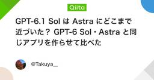
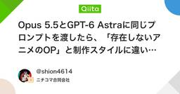
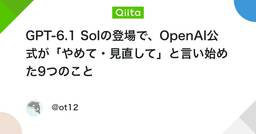
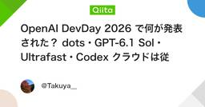
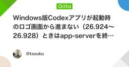
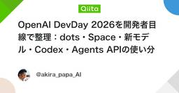
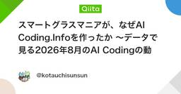
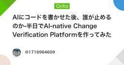
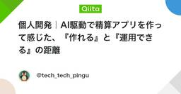
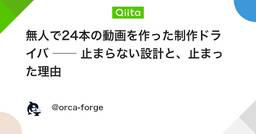
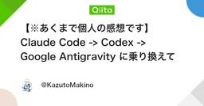